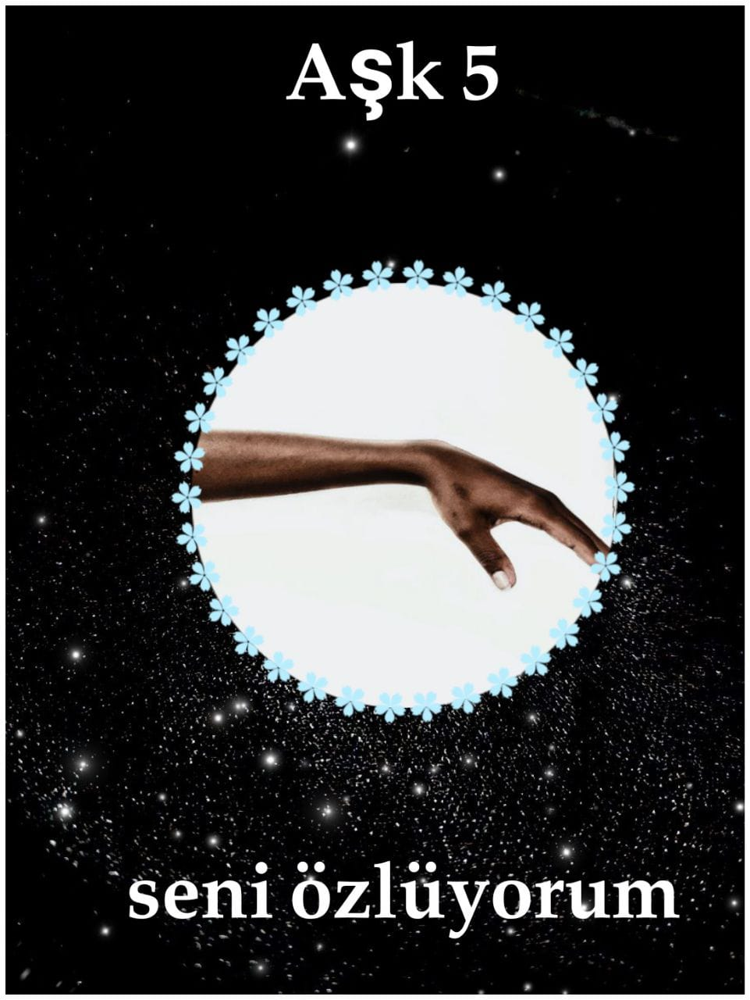

Comprehensive Bird Care Guide
Creating a safe environment for your feathered companion is key to a long and happy life together.
Popular Beginner Bird Species
Top Recommended Birds
- Budgerigars (Budgies): Small, friendly, and easy for beginners to care for.
- Cockatiels: Affectionate, crest-headed birds known for whistling tunes.
- Lovebirds: Active and social parrots with vibrant colorful feathers.
Essential Housing Tips
- Select a cage large enough for full wing spread.
- Provide natural wood perches of varying diameters.
- Clean food and water dishes every single day.
Explore more pet avian veterinary guidance at Association of Avian Veterinarians.
Discover the Secrets of Your Energy and Future
Welcome to a sanctuary of peace and inner balance. Here, we help you understand the language of the cosmos, zodiac energies, and the hidden guidance of your soul.

Why Explore Energy and Astrology?
Astrology and tarot are not just predictions; they are mirrors of the human inner self, helping you reorganize your thoughts and restore mental harmony.
- Understand the energies surrounding you with clarity
- Gain spiritual guidance for your important life decisions
- Achieve inner peace and universal alignment